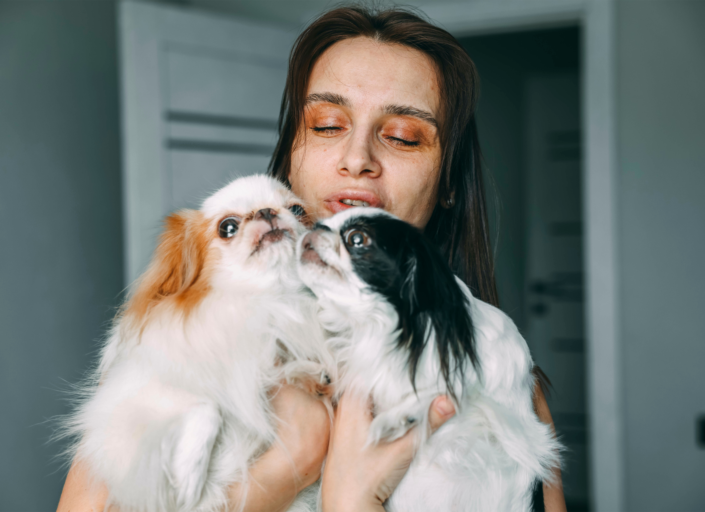

How to Help
Volunteer
 Volunteering with Safe Haven Animal Shelter is a rewarding way to make a direct impact in
the lives of animals in need. Whether you’re helping with daily care, walking dogs,
assisting at adoption events, or lending a hand behind the scenes, every role plays a
vital part in our mission. No experience is necessary—just a big heart and a willingness
to help. To get started, simply fill out our volunteer application online, and our team
will reach out with next steps and upcoming orientation dates. Join us and become part of
a community that’s changing lives, one paw at a time.
Volunteering with Safe Haven Animal Shelter is a rewarding way to make a direct impact in
the lives of animals in need. Whether you’re helping with daily care, walking dogs,
assisting at adoption events, or lending a hand behind the scenes, every role plays a
vital part in our mission. No experience is necessary—just a big heart and a willingness
to help. To get started, simply fill out our volunteer application online, and our team
will reach out with next steps and upcoming orientation dates. Join us and become part of
a community that’s changing lives, one paw at a time.
Foster
 Fostering with Safe Haven Animal Shelter is a powerful way to give animals a second chance by providing them with a temporary, loving home while they wait for adoption. Whether it’s a puppy needing socialization, a senior dog recovering from surgery, or a cat adjusting after rescue, your care helps them heal and thrive. We provide all the supplies and medical care—you supply the love and safe space. If you're ready to open your heart and home, fill out our foster application here, and our team will guide you through the simple onboarding process. Fostering saves lives, and you can be the reason an animal finds their forever home.
Donate
Donating to Safe Haven Animal Shelter is one of the most impactful ways you can help save and change lives. Your generous support allows us to provide food, medical care, shelter, and rehabilitation for animals in need throughout the Houston area. Every dollar makes a difference—no gift is too small. You can make a one-time donation or become a monthly supporter through our secure online portal here. We also accept in-kind donations like pet supplies and food. If you're interested in donating in-kind supplies, contact us here to inquire and see how you can help. Together, we can give every animal the second chance they deserve.